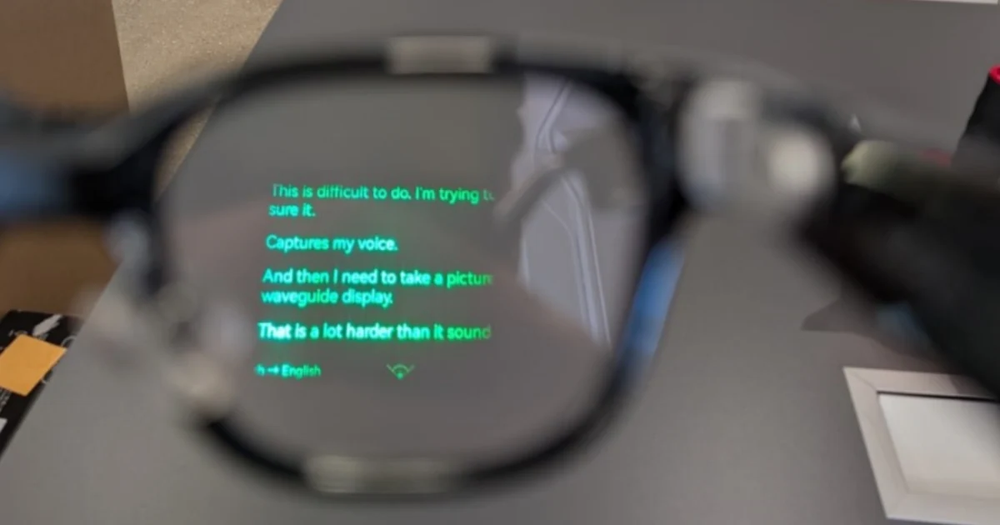

Invigilator's Field Guide
監考須知｜智慧眼鏡辨識與處置
115學年度 鳳新高中教務處
智慧眼鏡簡介
台大醫牙二階筆試（2026.06）：監試人員覺得考生頭愈來愈低，走近發現換了一副黑框眼鏡，一摸「很燙、使用中」。處分：該科零分。
115 分科測驗（2026.07）：監試人員覺得黑框眼鏡不對勁，下一科以金屬探測器掃描有反應。鏡腳有電源開關、多處用黑膠帶包住。處分：取消考試資格。
怎麼看：鏡腳是重點，不是鏡片
電池、晶片、喇叭、麥克風全藏在鏡腳裡。越來越多新款沒有鏡頭，只靠鏡片顯示或語音，外觀跟普通眼鏡幾乎一樣。
右圖是「有顯示」款的鏡片實拍——文字直接投在鏡片上，只有戴的人看得到，旁人從正面完全無法察覺。這就是為什麼光看鏡片不夠，要看鏡腳。
下面兩張示意圖標出所有「普通眼鏡不該有」的東西。

鏡片上的綠色文字——戴的人看得到，旁人看不到
正面看：鏡頭、指示燈、粗壯鉸鏈。注意：越來越多款式沒有鏡頭，①② 看不到不代表安全。
側面看：鏡腳是重點。整副重量通常 40 克以上，一般眼鏡多在 20–35 克，拿在手上差異明顯。
常見款式一覽
A 類：有鏡頭（可拍照／錄影＋語音）
辨識線索最多：鏡框外側有鏡頭小孔、指示燈，鏡腳明顯粗壯。
B 類：無鏡頭（純顯示或純語音——更難辨識）
沒有鏡頭、沒有指示燈，外觀最接近普通眼鏡。要靠鏡腳厚度、接點、重量、溫度來判斷。
產品資訊依 2026 年 9 月公開報導整理。
監考應對方式
檢核步驟建議
原則：考試中不打斷作答。當場要學生拔眼鏡會中斷考試，若判斷錯誤反而衍生爭議。先記錄、考後再查驗。
→ 確認是智慧眼鏡
- 拍照存證：正面、側面、鏡腳內側、膠帶處。
- 請陪同學生攜帶眼鏡前往教務處。
→ 學生拒絕配合
- 記錄事實（時間、座號、拒絕情形）。
- 口頭告知學生，拒絕檢查將加重罰則。
- 通報試務組，不對峙。
考試前：快速掃視
- 鏡腳比一般眼鏡粗、厚、重，鉸鏈處又方又壯
- 鏡腳上有按鍵、觸控條、金屬充電接點、喇叭格柵、小孔（麥克風）
- 鏡框外側上角有小圓孔（鏡頭）或小白點（指示燈）
- 鏡腳上新貼黑膠帶、貼紙——分科案例就是這樣被看穿的
考試中：留意學生肢體動作
- 頭愈寫愈低，像在把試卷對準鏡頭；盯著空中某個角落不動（在讀鏡片上的字）
- 反覆輕摸鏡腳（操作觸控）、嘴唇微動（語音指令）
- 大熱天穿帽 T 戴帽、頭髮蓋耳際、中途換眼鏡
易誤判的狀況
- 粗黑框 ≠ 智慧眼鏡：要看多出來的孔、鍵、接點，不是看粗細
- 找不到鏡頭 ≠ 安全：2026 年起多款沒鏡頭
- 金屬框、鈦金屬腳的鉸鏈也會讓探測器響——看響的是「兩點」還是「整段」
- 助聽器、電子耳是輔具，事前已登錄，不列入查驗
校規依據
本校段考試場規則第（六）條：相關規定比照大學入學考試中心每年度考試簡章「試場規則及違規處理辦法」。
大考中心 116 學年度簡章（2026-09 公告）：
- 攜帶智慧眼鏡入座，無論是否使用，一律視同舞弊，該節不予計分。
- 拒絕交出或拒絕配合查驗，取消考試資格。
- 考生報名即同意接受電子及金屬探測設備檢查。
帶進座位就違規。老師只要確認「這是智慧眼鏡」，不必證明「正在使用」。
零成本輔助：藍牙掃描 App
「Nearby Glasses」（德國學者開發、開源、免費）可掃描低功耗藍牙訊號、比對廠商識別碼。
- 能做的：巡場人員在走廊開著掃，跳通知就提高該試場巡視密度。
- 不能做的：當確認工具或證據。只認 Meta/Snap 家族，關藍牙就掃不到，也無法定位是哪個學生。
沒有探測器時，「App 預警＋摘下目視＋摸溫度」是零成本可行的組合。
資料來源
中央社（2026-07-27）分科測驗首度啟用金屬探測報導｜聯合新聞網（2026-06-11）台大 AI 眼鏡舞弊報導｜聯合新聞網（2026-09）116 簡章公告報導｜公視新聞網｜自由時報｜Tom's Guide 智慧眼鏡辨識特徵｜Nearby Glasses (GitHub: yjeanrenaud)｜本校段考試場規則。示意照片為校內參考用，不對外發布。
照片為校內參考用，不對外發布。本文件供校內監考人員參考，非正式公文。
國立鳳新高中 教務處試務組｜2026-09 初稿